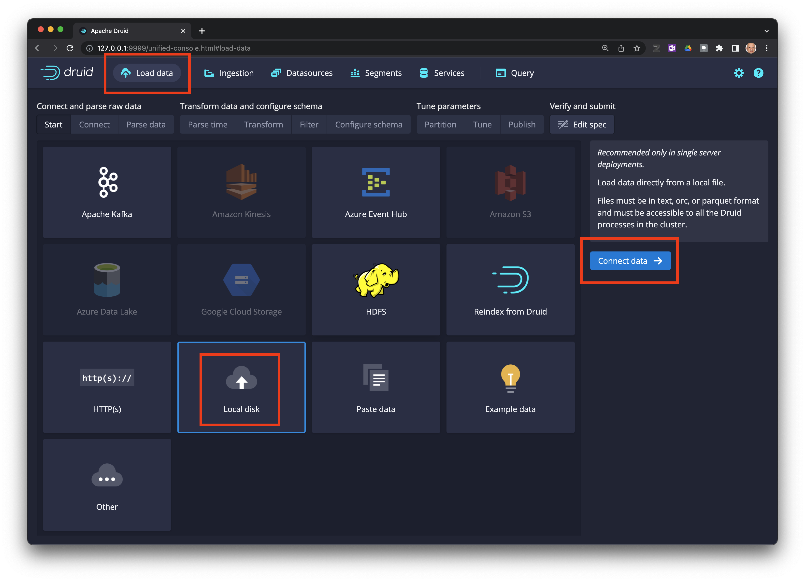
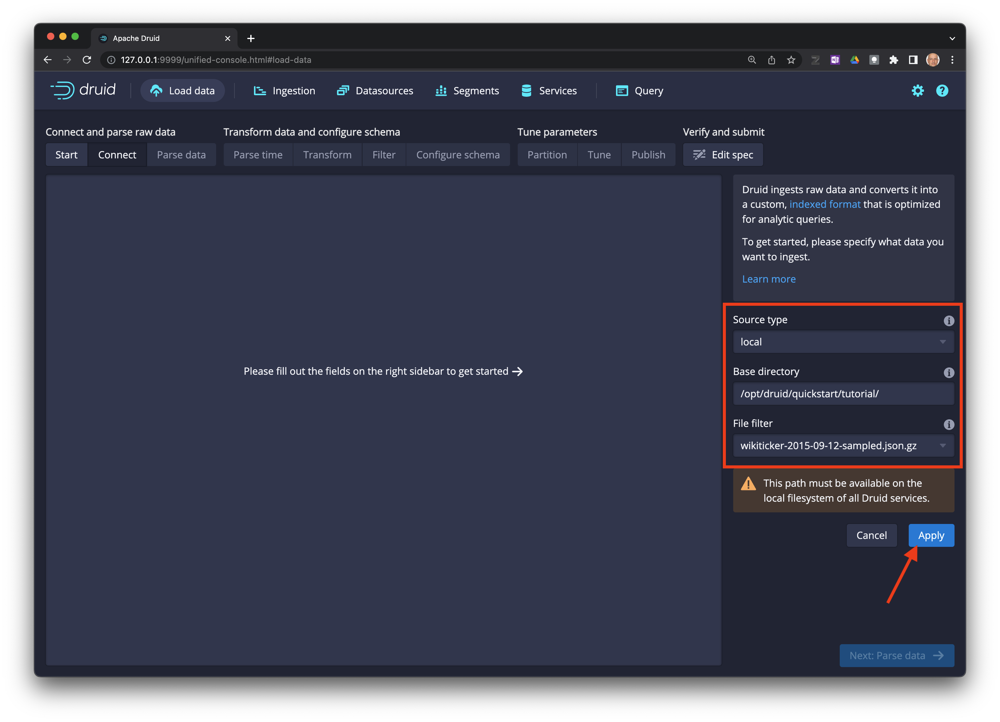
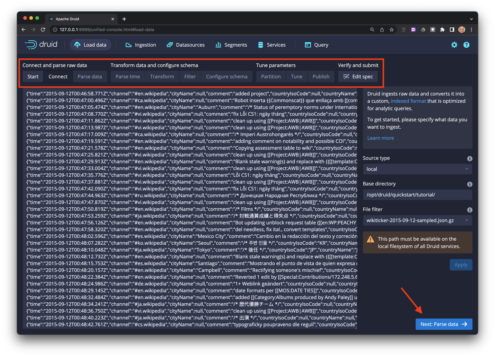
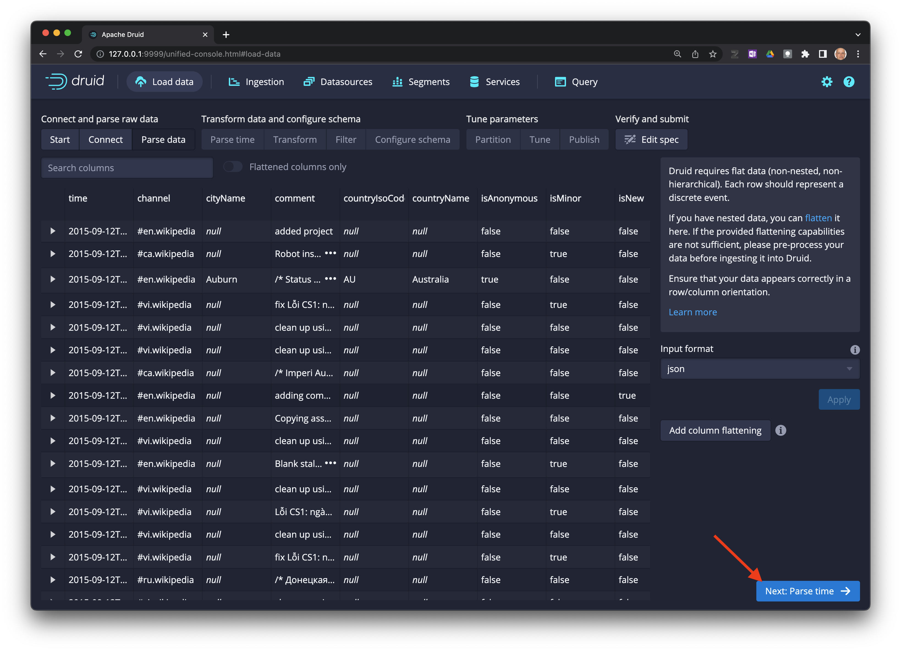
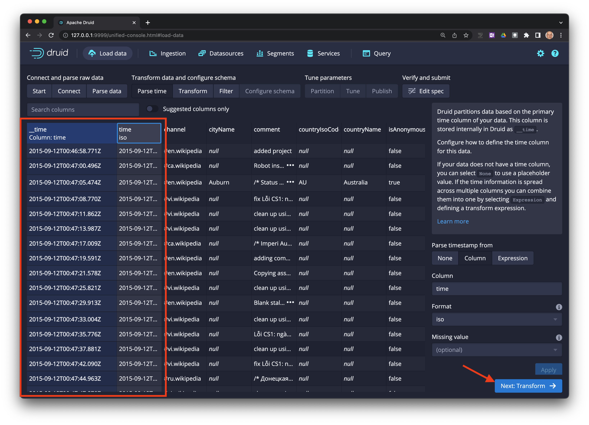
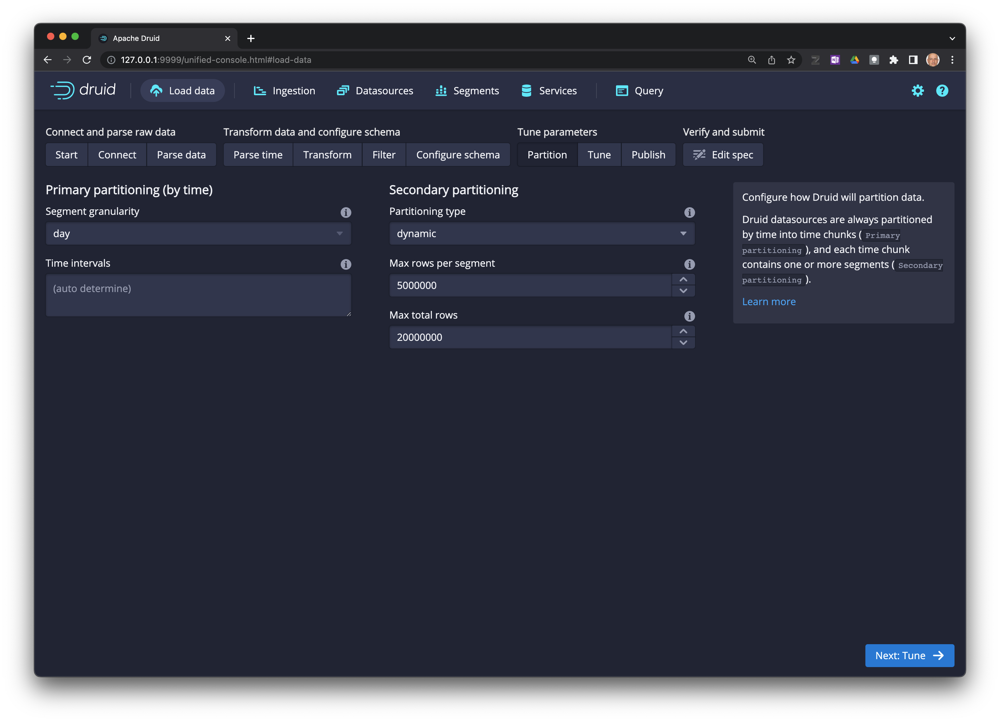
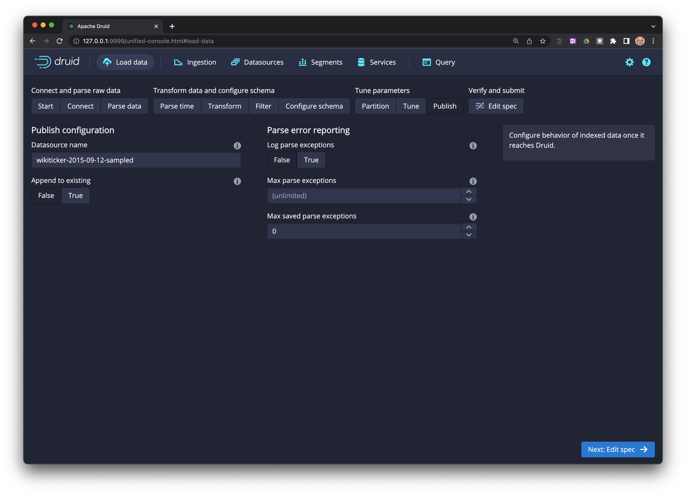
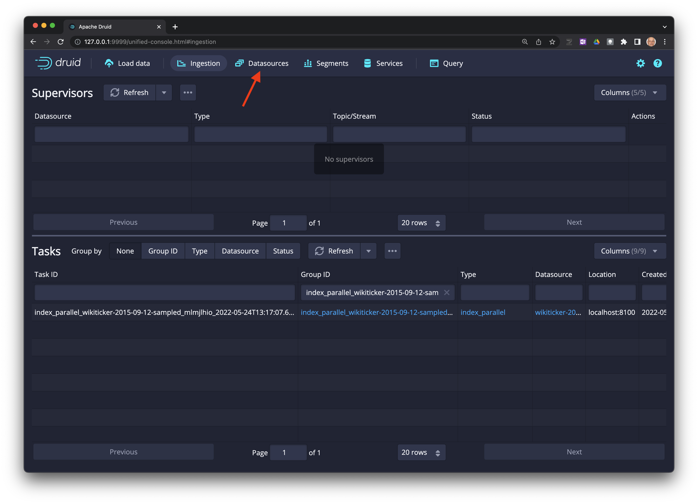
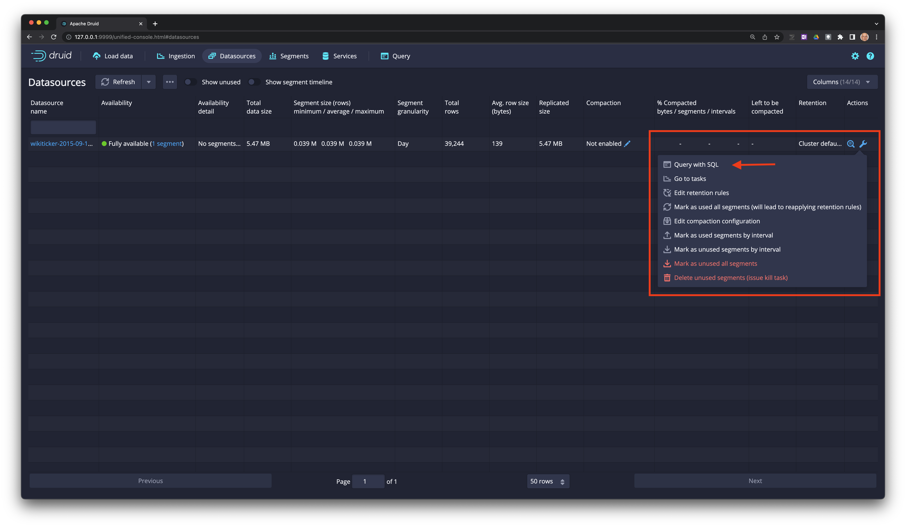
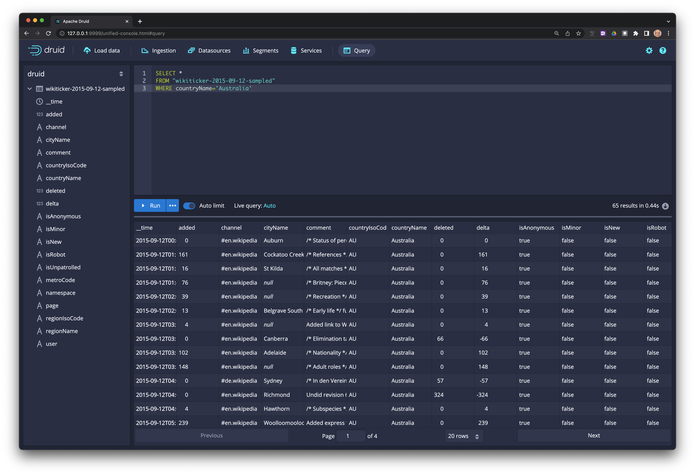

Procesamiento de datos locales con SQL en Apache Druid
Ultima modificación: Mayo 24, 2022
La interfaz está disponible en 127.0.0.0:9999
Carga de datos
Haga click en
Load dataen la barra de menu, y luego enConnect data ->.

Llene los campos indicados (el archivo se encuentra disponible en el sistema de archivos del contenedor de Docker):
Source type: local
Base directory: /opt/druid/quickstar/ttutorial/
File filter: wikiticker-2015-09-12-sampled.json.gz
Haga click en el botón
Apply.
Se pueden especificar múltiples archivos usando
*.

Los datos están disponibles para inspección visual. Use la barra superior para avanzar o retroceder por los pasos del proceso.
Cuando esté listo haga click en el botón Next: Parse data ->.

Haga click en
Next: Parse time. Note que Druid seleccionó automáticamente el formato del archivo.

Druid requiere una columna timestamp como clave primaria (llamada internamente como
__time). Si no existe una columna tipotimeen los datos, se debe seleccionarConstant value.
Seleccione
Next: Transform ->.

Seleccione
Next: Partition ->.
Seleccione
Next: Configure schema ->.

Seleccione
Next: Partition ->.
Seleccione
Next: Tune ->.

Seleccione
Next: Edit spec ->.

Realice consultas sobre los datos
Seleccione
Datasourceen la barra principal.

En el extremo izquierdo de la tabla seleccione el ícono de la llava y luego
Query with SQL.

Escriba su consulta en el editor y dele click a
Runpara ejecutarla.
